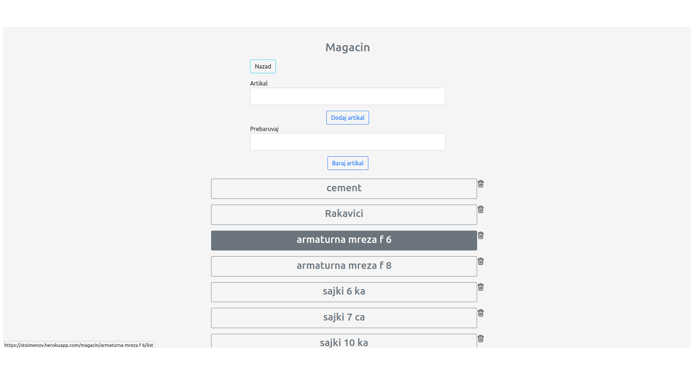
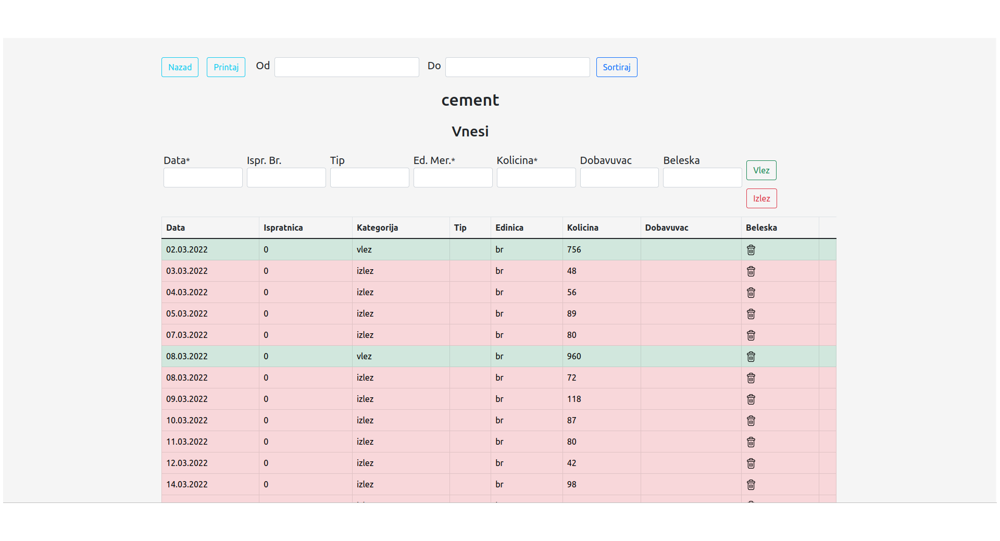

Менаџмент на магацин за градежна фирма


Што е
Карактеристики
Софтвер за менаџмент, помага на фирмата да го следи својот магацин. Што ја прави специјална? Тоа што е online, па можете да ја видите секаде во секое време.
Прави историја: на што влегува и излегува од магацинот и калкулира што е останато.
Лесно е да се користи: правено е заедно со луге што го работеле оваа на хартија, па има се што ви треба и повеке.
Онлајн, брзо и сигурно: го гледате магацинот додека сте на ручек или на одмор.